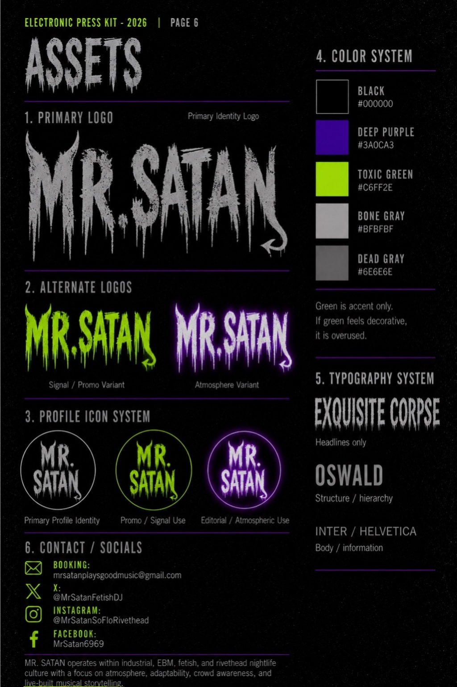
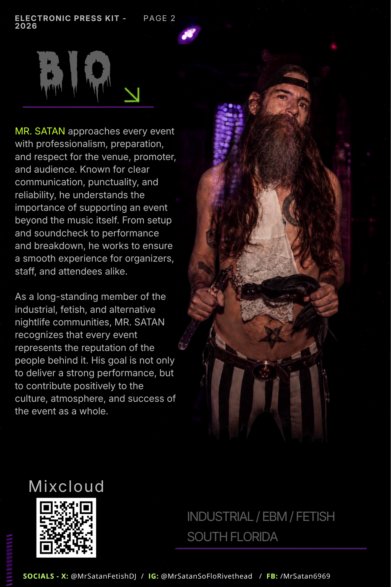
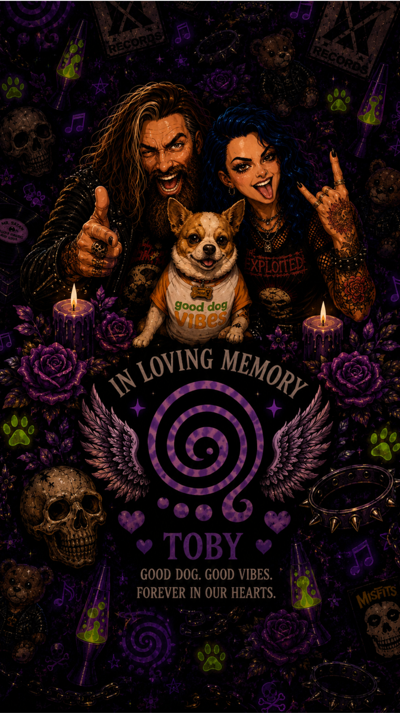
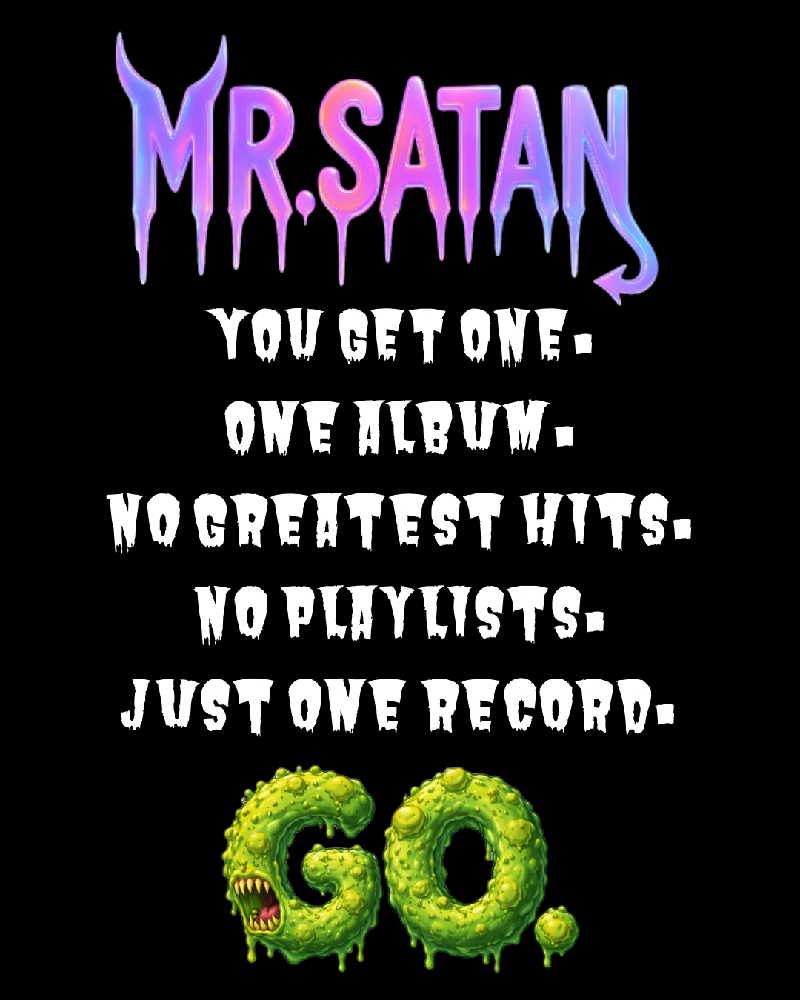

01 · Brand ecosystem
Mr. Satan
A South Florida Industrial / EBM / Fetish DJ brand built into a booking-ready ecosystem with identity, EPK, content strategy, social proof, and audience growth.
12K+Instagram views / 90 days
4K+Accounts reached
85%Views from non-followers
2K%Engagement lift shown in Meta





